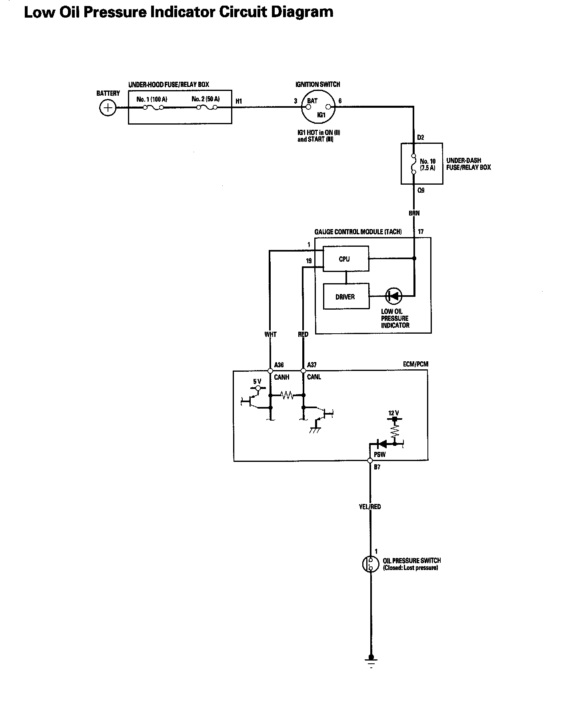
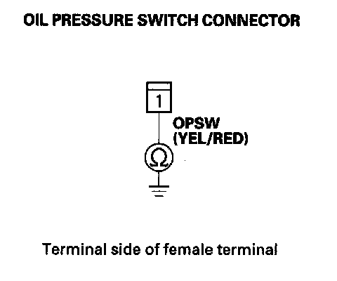

Low Oil Pressure Indicator Circuit Troubleshooting (Short)
Low Oil Pressure Indicator Circuit Troubleshooting (Short)Low Oil Pressure Indicator Circuit Diagram:

1. Connect the Honda Diagnostic System (HDS) to the data link connector (DLC).
2. Turn the ignition switch ON (II).
3. Make sure the HDS communicates with the vehicle and the engine control module (ECM). If it doesn't, troubleshoot the DLC circuit.
4. Check for DTCs. If a DTC is present, diagnose, and repair the cause before continuing with this test.
5. Start the engine, select PGM-FI, and check the OIL PRESSURE SWITCH in the DATA LIST with the HDS.
Is "OFF" indicated?
YES - Replace the gauge control module (tach).
NO - Go to step 6.
6. Turn the ignition switch OFF.
7. Disconnect the oil pressure switch connector.
8. Start the engine, and check the OIL PRESSURE SWITCH in the DATA LIST with the HDS.
Is "OFF" indicated?
YES - Go to step 9.
NO - Go to step 10.
9. Check the oil pressure switch.
Is the oil pressure switch OK?
YES - Do the oil pressure test.
NO - Replace the oil pressure switch.
10. Turn the ignition switch ON (II), and jump the SCS line with the HDS, then turn the ignition switch OFF.
NOTE: This step must be done to protect the ECM from damage.
11. Disconnect ECM connector B (44P) and the oil pressure switch connector.
12. Check for continuity between the oil pressure switch connector and body ground.

Is there continuity?
YES - Repair short in the wire between the oil pressure switch and the ECM.
NO - Update the ECM if it does not have the latest software, or substitute a known-good ECM, then recheck. If the symptom/indication goes away with a known-good ECM, replace the original ECM.